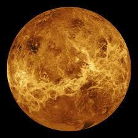

Arbol de la vida
Descripción:
El "Árbol de la Vida" es un símbolo que ha sido utilizado en diversas culturas, religiones y filosofías a lo largo de la historia, cada una dándole un significado particular. La imagen de un árbol con sus raíces en la tierra y sus ramas extendiéndose hacia el cielo es muy poderosa y evocativa
Imagen:
Planeta venus
Descripción:
Venus es el segundo planeta más cercano al Sol en nuestro sistema solar, ubicado entre Mercurio y la Tierra. Es conocido como el "Planeta Gemelo de la Tierra" debido a sus similitudes en tamaño, masa y composición, aunque posee condiciones atmosféricas y ambientales muy diferentes
Imagen:

El cosmos
Descripción:
El cosmos se refiere al universo en su totalidad, incluyendo todo el espacio, tiempo, materia y energía que existen. Describir el cosmos implica contemplar la inmensidad y complejidad del universo en su totalidad
Imagen: